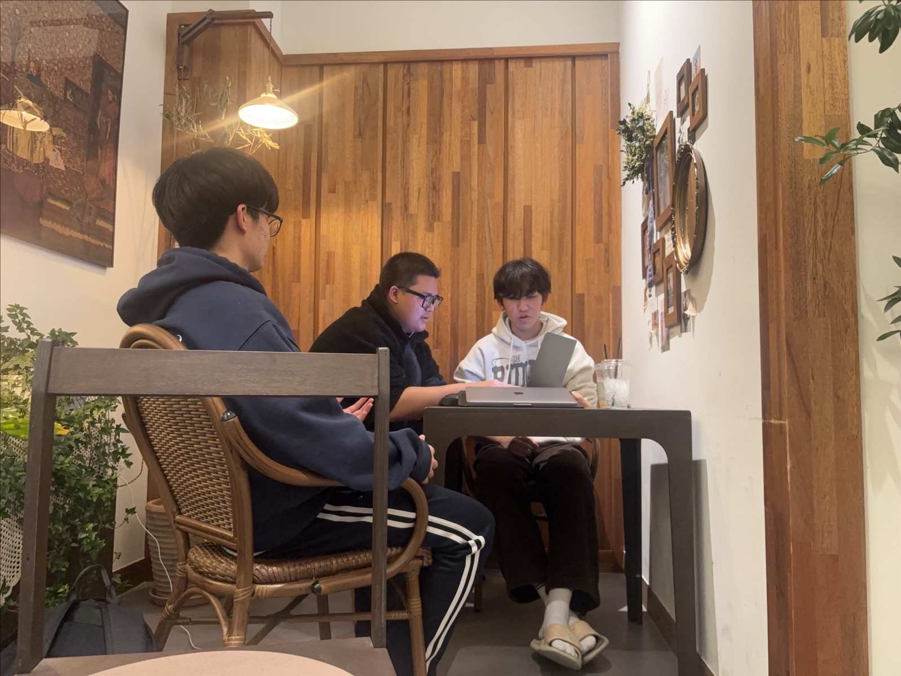

항공기의 치열한 안전과 시스템 공학에서, 천문학의 광활한 침묵과 데이터의 탐구까지.
하늘이라는 공통된 공간을 마주한 1학년 3인의 독서 융합 탐구 프로젝트
생명을 책임지는 엄격한 운항 절차와 복합 항공 시스템, 그리고 인공지능 자율 비행 시대에 맞서는 인간 조종사의 경험과 판단력을 탐구합니다.
단순한 낭만을 넘어 방대한 관측 데이터를 분석하고, 우주를 알아갈수록 끝없이 확장되는 미지의 영역을 대하는 과학자의 태도를 성찰합니다.
하늘과 우주라는 무대에서 과학적 원리와 인간의 사명을 잇다
"평소 항공기의 비행 원리와 광활한 우주에 존재하는 별과 행성에 관심이 많았다. 특히 항공기가 어떤 과학적 원리를 바탕으로 비행하는지, 우주를 연구하는 천문학자들은 어떤 방식으로 천체를 관찰하고 연구하는지 궁금했다. 이러한 궁금증을 해결하고 항공과 천문학에 대한 이해를 넓히기 위해 《조종사가 들려주는 비행이야기》와 《천문학자는 별을 보지 않는다》를 선정하여 읽게 되었다."
《조종사가 들려주는 비행이야기》를 바탕으로 비행 원리와 조종사의 책임, 그리고 미래 무인 비행의 가능성을 토론합니다.
"조종사의 실제 경험을 바탕으로 비행과 항공에 관한 이야기를 들려주는 책이다. 비행기가 나는 원리와 조종사의 역할, 비행 중 일어나는 다양한 상황을 쉽게 설명한다. 이 책을 통해 항공 지식을 배우고 조종사라는 직업을 깊이 이해할 수 있다."
《천문학자는 별을 보지 않는다》를 통해 낭만적 별보기를 넘어선 끈기 있는 연구와 미지의 우주를 대하는 태도를 탐구합니다.
"작가 자신의 연구 경험과 일상을 바탕으로 천문학자의 삶을 풀어낸 에세이다. 우주와 행성에 관한 과학적 지식뿐만 아니라 연구 과정에서 겪는 고민과 과학자로서의 태도, 일상 속에서 발견하는 과학의 의미를 이야기한다. 이를 통해 우리가 무심코 지나치는 세상도 과학자의 관점으로 바라보면 새로운 의미를 발견할 수 있다는 것을 보여준다."
⑤ 전체 토론 주제와 내용: "과학기술이 발전할수록 인간의 경험과 직관은 덜 중요해질까?"
"과학기술이 발달할수록 인간의 경험과 직관이 차지하는 비중은 점점 줄어들 것이다. 인공지능과 고정밀 측정 장비는 인간이 놓칠 수 있는 정보들을 빠르고 정확하게 분석할 수 있다. 항공 분야에서 자동 비행 시스템이 조종사의 업무를 대신하고 있고, 천문학에서는 최첨단 망원경과 컴퓨터 분석 기술을 이용해 인간이 직접 관측하기 어려운 천체까지 연구하고 있다. 그래서 기술이 더 발전한다면 인간의 경험과 직관에 의존하는 상황은 점점 줄어들 것이다."
"과학기술이 발전해도 인간의 경험과 직관은 여전히 중요하다. 기술은 많은 정보를 분석하고 정확한 결과를 알려줄 수 있지만, 예상하지 못한 상황에서 마지막으로 판단을 내리는 데에는 인간의 경험이 필요하다. 항공 분야에서 갑자기 기상이 변하거나 시스템이 오류가 났을 때 대처하기 위해 조종사의 판단력이 중요하다. 천문학에서도 관측한 결과를 해석하고 새로운 연구 방향을 정하는 것은 과학자가 하는 일이다. 그래서 기술은 인간의 능력을 보완하는 도구일 뿐, 경험과 직관을 완전히 대체할 수 없다."
"과학기술은 인간의 제약을 보충하고, 연구 및 업무의 정확도와 효율을 향상하는 주요한 역할을 수행한다."
"기술이 고도화될지라도 예측 불가능한 돌발 결함 상황에서의 최종 판단 권한과 법적·윤리적 책임 소재를 누구에게 둘 것인가에 대한 사회적 합의가 여전히 필요하다."
⑥ 토론 전후 생각의 변화, 인상 깊은 내용, 그리고 앞으로 이어질 학문적 여정
⑦ 활동 사진 및 학년별 추가 항목과 투명한 탐구 출처

《조종사가 들려주는 비행이야기》와 《천문학자는 별을 보지 않는다》 두 권의 책을 중심으로 토론 노트를 작성하고, 각자의 진로 및 관심 분야를 연계하여 진행한 실물 독서 활동 현장입니다.